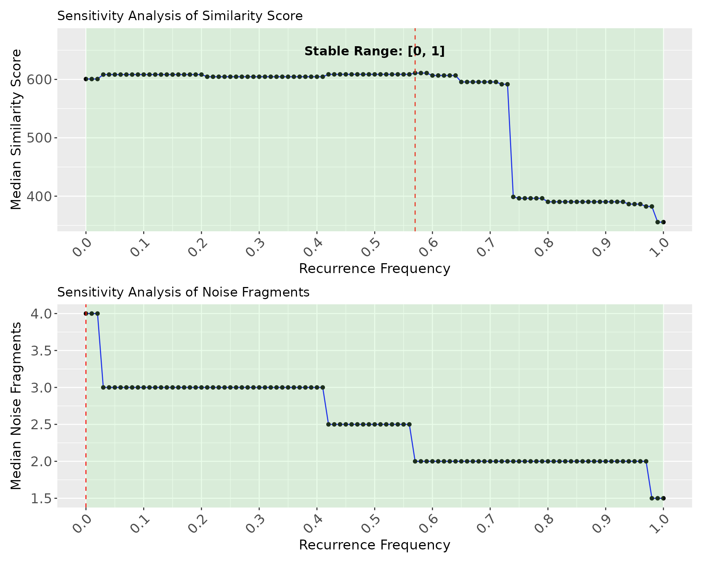

Demonstration of the tuning module of the package
Shayantan Banerjee
2025-04-05
dures-vignette-tuning.RmdTest Dataset for tuning
The test dataset used in this vignette is hosted at https://zenodo.org/records/15132924. Users need to download the file and unzip the folder contents on their local system.
- The
test_data_MTBLS606folder contains a folder namedmzml_files/and two files:Sample-and-feature-wise-RT-tolerance.txtandfeature_list.txt. Thefeature_list.txtfile has three columns: “ID”, “mz”, and “RT”. The additional fileSample-and-feature-wise-RT-tolerance.txtcontains the sample-wise RT tolerances for all features. The number of rows in both files is the same, while theSample-and-feature-wise-RT-tolerance.txtfile has twice as many columns asfeature_list.txt, withRT_min_andRT_max_appended to every sample name.
Install the dependencies
A simple and automated way to install and load all the dependencies is to run the following function
This should be followed by installing the actual package using devtools as shown below
if (!requireNamespace("devtools", quietly = TRUE)) {
install.packages("devtools", quiet = TRUE)
}
devtools::install_github("BiosystemEngineeringLab-IITB/dures", auth_token = NULL)
#> Downloading GitHub repo BiosystemEngineeringLab-IITB/dures@HEAD
#> Skipping 2 packages not available: Spectra, S4Vectors
#> ── R CMD build ─────────────────────────────────────────────────────────────────
#> * checking for file ‘/tmp/RtmpdMrWlI/remotes2bd6c546b5692/BiosystemEngineeringLab-IITB-dures-3be58a9/DESCRIPTION’ ... OK
#> * preparing ‘dures’:
#> * checking DESCRIPTION meta-information ... OK
#> * excluding invalid files
#> Subdirectory 'R' contains invalid file names:
#> ‘Misc’
#> * checking for LF line-endings in source and make files and shell scripts
#> * checking for empty or unneeded directories
#> Omitted ‘LazyData’ from DESCRIPTION
#> * building ‘dures_0.0.0.1.tar.gz’
#> Installing package into '/tmp/Rtmpdmu2yF/temp_libpath1face29387959'
#> (as 'lib' is unspecified)
library(dures)Test Dataset
The test dataset can be downloaded from the data deposited at https://zenodo.org/records/15132924
(folder name: test_data_MTBLS606/).
Workflow Overview
Reading mzML Files
The first step of the workflow involves reading mzML files and extracting MS/MS spectra within the specified m/z and RT tolerance.Extracting and Concatenating Spectra
The extracted spectra are then concatenated for all replicate spectra belonging to a given feature.Filtering Features
Features that do not have any MS/MS spectra extracted, based on the specified RT and m/z tolerance, are removed from the list.
# Define the path to the folder (replace with the actual path on your system)
folder_path <- "/data1/sbanerjee/test_data_MTBLS606/"
# Check if the directory exists
if (!dir.exists(folder_path)) {
stop("The directory test_1 does not exist. Please modify the path to the actual location of the test_1 folder")
}
l1 <- preprocess(folder_path = folder_path, tol_mz = 25, tol_rt = 0.1)
#> *******************Sanity check for input files***********************
#> ✓ Feature list file found!
#> ✓ Feature list file has the correct columns
#> ✓ mzml folder exists
#> ✓ RT tolerance file exists! Using custom tolerance
#> ✓ RT tolerance file format is valid
#> Reading spectra files...
#> | | | 0% | |=== | 4% | |====== | 8% | |========= | 12% | |============ | 17% | |=============== | 21% | |================== | 25% | |==================== | 29% | |======================= | 33% | |========================== | 38% | |============================= | 42% | |================================ | 46% | |=================================== | 50% | |====================================== | 54% | |========================================= | 58% | |============================================ | 62% | |=============================================== | 67% | |================================================== | 71% | |==================================================== | 75% | |======================================================= | 79% | |========================================================== | 83% | |============================================================= | 88% | |================================================================ | 92% | |=================================================================== | 96% | |======================================================================| 100%
#>
#> ✓ Spectra have been extracted from the MS2 files
#> Concatenating and checking if MS2 data is available for a given feature
#> MS2 spectra couldn't be extracted from a total of 25 features out of 166 features. They are as follows:ID_22,ID_81,ID_2472,ID_2579,ID_5318,ID_5462,ID_7083,ID_7303,ID_9345,ID_9762,ID_10538,ID_10589,ID_10591,ID_11511,ID_11988,ID_12186,ID_12529,ID_13506,ID_13844,ID_14363,ID_14391,ID_14927,ID_15743,ID_15779,ID_18081More details on what the list l1 contain, is provided in
the other vignette titled: “Demonstration of the package dures”
print(paste0("Length of stats file after removing features from which MS2 spectra couldn't be extracted: ", as.character(dim(l1$stats_file_ms2_only)[1])))
#> [1] "Length of stats file after removing features from which MS2 spectra couldn't be extracted: 141"For purposes of this vignette, we will consider a random subset of 50 features from this list of 141 MS2 features. The following step can be skipped while runnning the code on an actual experimental dataset.
# Set seed for reproducibility
set.seed(123)
# Step 1: Get all IDs from the dataframe
all_ids <- l1$stats_file_ms2_only$ID
# Step 2: Sample 50 IDs
selected_ids <- sample(all_ids, 50)
# Step 3: Subset dataframe and reorder by selected_ids
subset_stats <- l1$stats_file_ms2_only[l1$stats_file_ms2_only$ID %in% selected_ids, ]
subset_stats <- subset_stats[match(selected_ids, subset_stats$ID), ]
# Step 4: Subset and reorder spectra list to match the same order
subset_spectra <- l1$spectra_ms2_only[selected_ids] # list is named by ID
# Step 5: Store both in a new list
l1_subset <- list(
stats_file_ms2_only = subset_stats,
spectra_ms2_only = subset_spectra
)From now on, we will use l1_subset for all subsequent
analysis. The user may stick to l1 to continue with the
original set of MS2 features
Step 2: Extracting Top x% TIC Spectra and Grouping Fragments
In the second step, we will use l1 from the previous
step as input to:
- Extract the top x% TIC spectra, and
- Group fragments within a specified mass tolerance.
The user can modify the following parameters: - Top x% TIC value: Default is 80% (i.e., 0.8). - Mass tolerance: Default is 0.05 Da.
l2 = extract_raw_spectra(folder_path = folder_path, l1_subset, 0.05, 0.8)
#> | | | 0%Processing: ID_868
#> | |= | 2%Processing: ID_3460
#> | |=== | 4%Processing: ID_14115
#> | |==== | 6%Processing: ID_2324
#> | |====== | 8%Processing: ID_16923
#> | |======= | 10%Processing: ID_16237
#> | |======== | 12%Processing: ID_12923
#> | |========== | 14%Processing: ID_13220
#> | |=========== | 16%Processing: ID_15158
#> | |============= | 18%Processing: ID_13263
#> | |============== | 20%Processing: ID_13627
#> | |=============== | 22%Processing: ID_9466
#> | |================= | 24%Processing: ID_1434
#> | |================== | 26%Processing: ID_422
#> | |==================== | 28%Processing: ID_2322
#> | |===================== | 30%Processing: ID_501
#> | |====================== | 32%Processing: ID_12121
#> | |======================== | 34%Processing: ID_1646
#> | |========================= | 36%Processing: ID_10902
#> | |=========================== | 38%Processing: ID_11965
#> | |============================ | 40%Processing: ID_15708
#> | |============================= | 42%Processing: ID_13668
#> | |=============================== | 44%Processing: ID_14114
#> | |================================ | 46%Processing: ID_10573
#> | |================================== | 48%Processing: ID_890
#> | |=================================== | 50%Processing: ID_1605
#> | |==================================== | 52%Processing: ID_13823
#> | |====================================== | 54%Processing: ID_13891
#> | |======================================= | 56%Processing: ID_14523
#> | |========================================= | 58%Processing: ID_14521
#> | |========================================== | 60%Processing: ID_2297
#> | |=========================================== | 62%Processing: ID_9812
#> | |============================================= | 64%Processing: ID_1364
#> | |============================================== | 66%Processing: ID_1456
#> | |================================================ | 68%Processing: ID_6030
#> | |================================================= | 70%Processing: ID_3900
#> | |================================================== | 72%Processing: ID_13996
#> | |==================================================== | 74%Processing: ID_14070
#> | |===================================================== | 76%Processing: ID_13857
#> | |======================================================= | 78%Processing: ID_13422
#> | |======================================================== | 80%Processing: ID_1919
#> | |========================================================= | 82%Processing: ID_12922
#> | |=========================================================== | 84%Processing: ID_1640
#> | |============================================================ | 86%Processing: ID_13266
#> | |============================================================== | 88%Processing: ID_9142
#> | |=============================================================== | 90%Processing: ID_14526
#> | |================================================================ | 92%Processing: ID_15484
#> | |================================================================== | 94%Processing: ID_6849
#> | |=================================================================== | 96%Processing: ID_860
#> | |===================================================================== | 98%Processing: ID_11966
#> | |======================================================================| 100%The following code checks to ensure that the object
sps_top80_tic_2 is available in the local environment. This
is not required while running the package
# Check if 'sps_top80_tic_2' exists before assigning
if (!exists("sps_top80_tic_2", envir = .dures_env)) {
stop("Object 'sps_top80_tic_2' not found in .dures_env.")
} else {
assign("sps_top80_tic_2", get("sps_top80_tic_2", envir = .dures_env), envir = .dures_env)
}
#> Error: object '.dures_env' not foundPlease refer to the vignette titled “Demonstration of the package
dures” to know more about the structure of l2
Step 3: Consensus Spectrum Generation
In the third step, a consensus spectrum is generated using the top 80% TIC spectra, and the corresponding fragment frequencies are calculated.
- The consensus spectrum, also known as the inter-spectrum aggregate, is built using the same principle as the intra-spectrum aggregate.
- The output from this step includes:
- A single spectrum per feature.
- The peak frequencies for each feature.
l3 = call_aggregate(l2$sps_top_tic_2, 0.05, folder_path)
#> [1] "Creating aggregate spectra for 50 features. This is an expensive operation. Please wait.."Optional step: Install Git LFS to access curated libraries
The curated reference spectral libraries
(library_positive.rds and
library_negative.rds) used for MS/MS matching are tracked
using Git Large File Storage (LFS) due to their
size.
🔧 Step-by-Step Instructions
-
Install Git LFS (if not already installed)
Windows/macOS:
Download from https://git-lfs.github.com-
Linux (Debian/Ubuntu):
-
Initialize Git LFS in your local repo
-
Clone the repository (if you haven’t already)
-
Pull the large files managed by Git LFS
-
After pulling, you will find:
library_positive.rdslibrary_negative.rds
These files are now accessible and can be directly loaded in R using:
Note: These libraries are essential for precursor and fragment-level matching in the
duresworkflow.
Step 4: Labelling individual spectra for every feature
Using the recurrence frequencies calculated in Step 3, we will now label the fragments of every top TIC spectra for a given feature.
The output from this step is:
- A list containing all spectra for a given feature.
- The corresponding fragment frequencies for each labeled fragment.
This labeling process provides insights into how often each fragment appears across all spectra, allowing for better analysis of fragment patterns within the top TIC data. This can be an expensive operation, especially if there are a lor of fragments per feature.
l4 = label_individual_spectrum(l3, folder_path, 0.05)
#> | | | 0% | |========================================== | 60% | |============================ | 40% | |=============== | 22% | |========================================================= | 82% | |================= | 24% | |================== | 26% | |====== | 8% | |====================== | 32% | |==================================== | 52% | |========================================== | 60% | |==================================== | 52% | |============================ | 40% | |============================= | 42% | |=========================== | 38% | |========================= | 36% | |===================== | 30% | |====================== | 32% | |================================ | 46% | |===================== | 30% | |====== | 8% | |=========== | 16% | |============================ | 40% | |===================================================================== | 98% | |================= | 24% | |==================================== | 52% | |=================================== | 50% | |================================ | 46% | |============================ | 40% | |=========================== | 38%
#> [1] "A total of 230 fragments couldn't be labeled with frequencies. Ths list can be found in the text file titled `List_of_unlabeled_fragments` in the folder_path"Step 5: Matching Precursor m/z with Reference Library
In this step, we match the precursor m/z values of the selected 50 features against a curated reference library (included in the package) using a user-defined tolerance.
Based on the specified ionization mode, a
corresponding set of reference spectra is generated. Additionally,
fragments in the reference spectra that fall within the
specified m/z tolerance (tol) are grouped together
to support more robust MS/MS-level fragment
matching.
Note:
- We are usingl1_subset(notl1) for this analysis.
- This step requires the object generated in Step 2, namelysps_top80_tic_2.
Ensure that Step 2 has been executed prior to running this section.
l5 = precursor_matching(l1_subset, folder_path = folder_path, "negative", 0.05)
#> Loaded negative mode library from file: /data1/sbanerjee/test_data_MTBLS606//library_negative.rds
#> Matching precursor with library in negative mode
#> Processing metabolite: ID_868
#> Processing metabolite: ID_3460
#> No reference match using the current m/z tolerance for index: 2
#> Processing metabolite: ID_14115
#> Processing metabolite: ID_2324
#> Processing metabolite: ID_16923
#> Processing metabolite: ID_16237
#> Processing metabolite: ID_12923
#> Processing metabolite: ID_13220
#> Processing metabolite: ID_15158
#> Processing metabolite: ID_13263
#> Processing metabolite: ID_13627
#> Processing metabolite: ID_9466
#> No reference match using the current m/z tolerance for index: 12
#> Processing metabolite: ID_1434
#> Processing metabolite: ID_422
#> No reference match using the current m/z tolerance for index: 14
#> Processing metabolite: ID_2322
#> Processing metabolite: ID_501
#> Processing metabolite: ID_12121
#> Processing metabolite: ID_1646
#> Processing metabolite: ID_10902
#> No reference match using the current m/z tolerance for index: 19
#> Processing metabolite: ID_11965
#> Processing metabolite: ID_15708
#> Processing metabolite: ID_13668
#> Processing metabolite: ID_14114
#> Processing metabolite: ID_10573
#> No reference match using the current m/z tolerance for index: 24
#> Processing metabolite: ID_890
#> Processing metabolite: ID_1605
#> Processing metabolite: ID_13823
#> Processing metabolite: ID_13891
#> Processing metabolite: ID_14523
#> Processing metabolite: ID_14521
#> Processing metabolite: ID_2297
#> No reference match using the current m/z tolerance for index: 31
#> Processing metabolite: ID_9812
#> No reference match using the current m/z tolerance for index: 32
#> Processing metabolite: ID_1364
#> Processing metabolite: ID_1456
#> Processing metabolite: ID_6030
#> Processing metabolite: ID_3900
#> Processing metabolite: ID_13996
#> Processing metabolite: ID_14070
#> Processing metabolite: ID_13857
#> Processing metabolite: ID_13422
#> Processing metabolite: ID_1919
#> Processing metabolite: ID_12922
#> Processing metabolite: ID_1640
#> Processing metabolite: ID_13266
#> Processing metabolite: ID_9142
#> Processing metabolite: ID_14526
#> Processing metabolite: ID_15484
#> Processing metabolite: ID_6849
#> No reference match using the current m/z tolerance for index: 48
#> Processing metabolite: ID_860
#> Processing metabolite: ID_11966
#> Removing empty folders: ID_10573, ID_10902, ID_2297, ID_3460, ID_422, ID_6849, ID_9466, ID_9812
#> Precursor matching with the library did not yield spectra for the following metabolites: ID_10573, ID_10902, ID_2297, ID_3460, ID_422, ID_6849, ID_9466, ID_9812After this step, a folder named Reference will be
created inside your specified folder_path.
This folder contains the processed reference spectra that will be used
for downstream MS/MS-level matching.
A message will also be displayed listing all precursor ions that did not match with any reference spectra within the given tolerance.
Upon inspecting the object l5, you will notice that it is just a modified version of the stats file with only those precursors which yielded a library match.
Step 6: Fragment matching before denoising
Since we are currently tuning parameters on the available MS/MS
spectra, we begin by matching each spectrum with entries from the
Reference library. For each spectrum, we identify and
record the reference spectrum entry that yields the
best match before denoising.
This step is essential for tracking how well a spectrum matches a known reference in its raw form. After applying denoising using the same experimental spectrum, we will re-match it with the same reference spectrum to evaluate changes in similarity scores.
This before/after comparison allows us to quantify the effect of denoising using objective metrics such as similarity score, dot product, or fragment match rate. The input to the next function includes:
- The dataframe
l5 - The MS/MS fragment ion tolerance (
tol) - The ionization mode (e.g.,
"positive"or"negative")
In this step, all available MS/MS spectra
corresponding to each precursor in l5 are matched against
all available library spectra from the reference
database. For each spectrum, the best-matching reference
spectrum is recorded based on a chosen similarity metric.
⚠️ Note:
This step is computationally intensive, as it performs exhaustive pairwise matching between experimental and reference spectra.
l6 = fragment_matching_before_denoising(folder_path, l5, 0.05, "negative")
#> Processing Metabolite: ID_868 Entry: 1
#> Processing Metabolite: ID_14115 Entry: 2
#> Processing Metabolite: ID_2324 Entry: 3
#> Processing Metabolite: ID_16923 Entry: 4
#> Processing Metabolite: ID_16237 Entry: 5
#> Processing Metabolite: ID_12923 Entry: 6
#> Processing Metabolite: ID_13220 Entry: 7
#> Processing Metabolite: ID_15158 Entry: 8
#> Processing Metabolite: ID_13263 Entry: 9
#> Processing Metabolite: ID_13627 Entry: 10
#> Processing Metabolite: ID_1434 Entry: 11
#> Processing Metabolite: ID_2322 Entry: 12
#> Processing Metabolite: ID_501 Entry: 13
#> Processing Metabolite: ID_12121 Entry: 14
#> Processing Metabolite: ID_1646 Entry: 15
#> Processing Metabolite: ID_11965 Entry: 16
#> Processing Metabolite: ID_15708 Entry: 17
#> Processing Metabolite: ID_13668 Entry: 18
#> Processing Metabolite: ID_14114 Entry: 19
#> Processing Metabolite: ID_890 Entry: 20
#> Processing Metabolite: ID_1605 Entry: 21
#> Processing Metabolite: ID_13823 Entry: 22
#> Processing Metabolite: ID_13891 Entry: 23
#> Processing Metabolite: ID_14523 Entry: 24
#> Processing Metabolite: ID_14521 Entry: 25
#> Processing Metabolite: ID_1364 Entry: 26
#> Processing Metabolite: ID_1456 Entry: 27
#> Processing Metabolite: ID_6030 Entry: 28
#> Processing Metabolite: ID_3900 Entry: 29
#> Processing Metabolite: ID_13996 Entry: 30
#> Processing Metabolite: ID_14070 Entry: 31
#> Processing Metabolite: ID_13857 Entry: 32
#> Processing Metabolite: ID_13422 Entry: 33
#> Processing Metabolite: ID_1919 Entry: 34
#> Processing Metabolite: ID_12922 Entry: 35
#> Processing Metabolite: ID_1640 Entry: 36
#> Processing Metabolite: ID_13266 Entry: 37
#> Processing Metabolite: ID_9142 Entry: 38
#> Processing Metabolite: ID_14526 Entry: 39
#> Processing Metabolite: ID_15484 Entry: 40
#> Processing Metabolite: ID_860 Entry: 41
#> Processing Metabolite: ID_11966 Entry: 42The corresponding results are stored in the folder
Before_denoising_matches. Let us inspect this. You can
change this to an ID of your choice.
id = l6$Feature_ID[1]
file = read.csv(paste0(folder_path, "Before_denoising_matches/", id, ".csv"))
# Display the first few rows and columns (e.g., first 5 rows and 5 columns)
head(file[, 1:5])
#> Matching_Score Modified_Dot_Product Number_of_Matching_Fragments
#> 1 848.1777 0.9348845 14
#> 2 835.6602 0.9312324 13
#> 3 834.6473 0.9292066 13
#> 4 832.7155 0.9253431 13
#> 5 843.3331 0.9251952 14
#> 6 831.7783 0.9234687 13
#> Forward_Dot_Product Reverse_Dot_Product
#> 1 0.9002370 0.9695320
#> 2 0.8997862 0.9626787
#> 3 0.8893817 0.9690315
#> 4 0.8752675 0.9754187
#> 5 0.8739811 0.9764092
#> 6 0.8816056 0.9653318
# Generate summary statistics for all numeric columns
summary(file)
#> Matching_Score Modified_Dot_Product Number_of_Matching_Fragments
#> Min. : 0.0 Min. :0.0000 Min. : 0.000
#> 1st Qu.: 0.0 1st Qu.:0.0000 1st Qu.: 0.000
#> Median : 0.0 Median :0.0000 Median : 0.000
#> Mean :192.2 Mean :0.2072 Mean : 2.771
#> 3rd Qu.:517.9 3rd Qu.:0.5751 3rd Qu.: 5.000
#> Max. :940.9 Max. :0.9349 Max. :33.000
#> Forward_Dot_Product Reverse_Dot_Product Total_Experimental_fragments
#> Min. :0.0000 Min. :0.0000 Min. :19.00
#> 1st Qu.:0.0000 1st Qu.:0.0000 1st Qu.:30.00
#> Median :0.0000 Median :0.0000 Median :44.00
#> Mean :0.1434 Mean :0.2709 Mean :43.86
#> 3rd Qu.:0.2913 3rd Qu.:0.7742 3rd Qu.:54.00
#> Max. :0.9002 Max. :0.9987 Max. :89.00
#> Total_Library_fragments Feature_ID Scan_Number
#> Min. : 2.000 Length:4100 Length:4100
#> 1st Qu.: 4.000 Class :character Class :character
#> Median : 7.000 Mode :character Mode :character
#> Mean : 8.378
#> 3rd Qu.:12.000
#> Max. :57.000
#> Library_name Splash_key ID mz
#> Length:4100 Length:4100 Length:4100 Min. :445.1
#> Class :character Class :character Class :character 1st Qu.:445.1
#> Mode :character Mode :character Mode :character Median :445.1
#> Mean :445.1
#> 3rd Qu.:445.1
#> Max. :445.1Description of Columns in the Matching Results
(ID_868.csv)
The table below summarizes the meaning and role of each column in the MS/MS spectral matching results:
| Column Name | Description |
|---|---|
Matching_Score |
Overall similarity score between the experimental and reference spectra. |
Modified_Dot_Product |
A variant of the dot product that adjusts for fragment intensity distribution. |
Number_of_Matching_Fragments |
Number of fragment ions that matched between experimental and reference spectra. |
Forward_Dot_Product |
Dot product calculated with the experimental spectrum as the reference frame. |
Reverse_Dot_Product |
Dot product calculated with the library spectrum as the reference frame. |
Total_Experimental_fragments |
Total number of fragment ions in the experimental spectrum. |
Total_Library_fragments |
Total number of fragment ions in the reference library spectrum. |
Feature_ID |
Identifier for the experimental feature or precursor ion. |
Scan_Number |
Identifier for the individual scan associated with the spectrum. |
Library_name |
Name or accession of the matched library entry. |
Splash_key |
Unique SPLASH identifier for the library spectrum (if available). |
ID |
Internal identifier combining feature ID and scan information. |
mz |
Precursor m/z value for the matched spectrum. |
These columns are essential for evaluating the quality of spectral
matches both before and after denoising. Metrics like
Matching_Score, Dot_Products, and
Number_of_Matching_Fragments can be compared to assess
improvement in spectral quality post-denoising.
Step 7: Deriving the optinal recurrence frequency cutoff
tuning_module()
This function performs frequency-based tuning of MS/MS spectra denoising parameters for a curated set of precursor features. It evaluates multiple frequency thresholds to identify optimal denoising cutoffs using a Pareto optimization framework.
Inputs
-
folder_path: Path to the working directory containing input and output folders. -
l4: Output fromlabel_individual_spectrum()— a list of MS/MS spectra annotated with fragment frequencies. -
l5: Data frame of features matched at the MS1 level (output fromprecursor_matching.R). -
l6: Matching results before denoising. -
tolerance: MS/MS fragment ion tolerance in Daltons (default:0.05).
What the Function Does
Iterates over each matched feature and retrieves its associated annotated MS/MS spectra.
Applies denoising at multiple frequency thresholds (
0.00to1.00in steps of0.01) to generate subspectra.Stores these thresholded spectra in the folder:
Denoised_spectra_for_tuning/.-
For each feature:
- Matches all thresholded spectra against the best-matching reference spectrum (identified before denoising).
- Computes similarity scores using dot product-based metrics and
stores results in
After_denoising_matches/.
-
Calculates:
- Signal reduction: Loss in matching fragments post-denoising.
- Noise reduction: Reduction in unmatched fragments (interpreted as noise).
- FMR (Fragment Match Rate): Ratio of matching to total fragments before and after denoising.
-
Applies Pareto front analysis to identify optimal trade-offs between signal retention and noise reduction.
- If applicable, also uses knee-point detection and differential evolution optimization (DEoptim) as backup strategies.
-
Stores results as:
- CSV files of all evaluated matches
(
pareto_results/csv/) - Pareto front plots for each feature
(
pareto_results/pdf/) - Final optimal scores in a merged summary table.
- CSV files of all evaluated matches
(
-
Calculates:
- The percentage increase in similarity scores (after vs. before denoising)
- Filters features with improved scores and positive signal retention for downstream evaluation.
Output
Returns a filtered data frame containing: - Optimal frequency
threshold (freq) - Matching score before and after
denoising - Signal and noise reduction metrics - Fragment match rates
(FMR) - Similarity scores - Final selected features based on Pareto
optimization
l7 = tuning_module(folder_path, l4, l5, l6, 0.05)
#> Creating subspectra for every threshold...
#> | | | 0% | |= | 2% | |=== | 4% | |==== | 6% | |====== | 9% | |======= | 11% | |========= | 13% | |========== | 15% | |============ | 17% | |============= | 19% | |=============== | 21% | |================ | 23% | |================== | 26% | |=================== | 28% | |===================== | 30% | |====================== | 32% | |======================== | 34% | |========================= | 36% | |=========================== | 38% | |============================ | 40% | |============================== | 43% | |=============================== | 45% | |================================= | 47% | |================================== | 49% | |==================================== | 51% | |===================================== | 53% | |======================================= | 55% | |======================================== | 57% | |========================================== | 60% | |=========================================== | 62% | |============================================= | 64% | |============================================== | 66% | |================================================ | 68% | |================================================= | 70% | |=================================================== | 72% | |==================================================== | 74% | |====================================================== | 77% | |======================================================= | 79% | |========================================================= | 81% | |========================================================== | 83% | |============================================================ | 85% | |============================================================= | 87% | |=============================================================== | 89% | |================================================================ | 91% | |================================================================== | 94% | |=================================================================== | 96% | |===================================================================== | 98% | |======================================================================| 100%
#> Processing Metabolite: ID_868 Entry: 1
#> Processing Metabolite: ID_14115 Entry: 2
#> Processing Metabolite: ID_2324 Entry: 3
#> Processing Metabolite: ID_16923 Entry: 4
#> Processing Metabolite: ID_16237 Entry: 5
#> Processing Metabolite: ID_12923 Entry: 6
#> Processing Metabolite: ID_13220 Entry: 7
#> Processing Metabolite: ID_15158 Entry: 8
#> Processing Metabolite: ID_13263 Entry: 9
#> Processing Metabolite: ID_13627 Entry: 10
#> Processing Metabolite: ID_1434 Entry: 11
#> Processing Metabolite: ID_2322 Entry: 12
#> Processing Metabolite: ID_501 Entry: 13
#> Processing Metabolite: ID_12121 Entry: 14
#> Processing Metabolite: ID_1646 Entry: 15
#> Processing Metabolite: ID_11965 Entry: 16
#> Processing Metabolite: ID_15708 Entry: 17
#> Processing Metabolite: ID_13668 Entry: 18
#> Warning in max(exp_spectra$intensity, na.rm = TRUE): no non-missing arguments
#> to max; returning -Inf
#> Warning in min(mz_e): no non-missing arguments to min; returning Inf
#> Warning in max(mz_e): no non-missing arguments to max; returning -Inf
#> Warning in max(exp_spectra$intensity, na.rm = TRUE): no non-missing arguments
#> to max; returning -Inf
#> Warning in min(mz_e): no non-missing arguments to min; returning Inf
#> Warning in max(mz_e): no non-missing arguments to max; returning -Inf
#> Processing Metabolite: ID_14114 Entry: 19
#> Processing Metabolite: ID_890 Entry: 20
#> Processing Metabolite: ID_1605 Entry: 21
#> Processing Metabolite: ID_13823 Entry: 22
#> Processing Metabolite: ID_13891 Entry: 23
#> Processing Metabolite: ID_14523 Entry: 24
#> Processing Metabolite: ID_14521 Entry: 25
#> Processing Metabolite: ID_1364 Entry: 26
#> Processing Metabolite: ID_1456 Entry: 27
#> Processing Metabolite: ID_6030 Entry: 28
#> Processing Metabolite: ID_3900 Entry: 29
#> Processing Metabolite: ID_13996 Entry: 30
#> Processing Metabolite: ID_14070 Entry: 31
#> Processing Metabolite: ID_13857 Entry: 32
#> Processing Metabolite: ID_13422 Entry: 33
#> Processing Metabolite: ID_1919 Entry: 34
#> Processing Metabolite: ID_12922 Entry: 35
#> Processing Metabolite: ID_1640 Entry: 36
#> Processing Metabolite: ID_13266 Entry: 37
#> Processing Metabolite: ID_9142 Entry: 38
#> Processing Metabolite: ID_14526 Entry: 39
#> Processing Metabolite: ID_15484 Entry: 40
#> Processing Metabolite: ID_860 Entry: 41
#> Processing Metabolite: ID_11966 Entry: 42
#> Starting pareto optimization.. | | | 0% | |== | 2%
#> [ID_868] sky1 rows: 28
#> Saving 7.29 x 4.51 in image
#> | |=== | 5%
#> [ID_14115] sky1 rows: 101
#> Saving 7.29 x 4.51 in image
#> | |===== | 7%
#> [ID_2324] sky1 rows: 22
#> Saving 7.29 x 4.51 in image
#> | |======= | 10%
#> [ID_16923] sky1 rows: 10
#> Saving 7.29 x 4.51 in image
#> | |======== | 12%
#> [ID_16237] sky1 rows: 20
#> Saving 7.29 x 4.51 in image
#> | |========== | 14%
#> [ID_12923] sky1 rows: 29
#> Saving 7.29 x 4.51 in image
#> | |============ | 17%
#> [ID_13220] sky1 rows: 12
#> Saving 7.29 x 4.51 in image
#> | |============= | 19%
#> [ID_15158] sky1 rows: 14
#> Saving 7.29 x 4.51 in image
#> | |=============== | 21%
#> [ID_13263] sky1 rows: 5
#> Saving 7.29 x 4.51 in image
#> | |================= | 24%
#> [ID_13627] sky1 rows: 20
#> Saving 7.29 x 4.51 in image
#> | |================== | 26%
#> [ID_1434] sky1 rows: 16
#> Saving 7.29 x 4.51 in image
#> | |==================== | 29%
#> [ID_2322] sky1 rows: 13
#> Saving 7.29 x 4.51 in image
#> | |====================== | 31%
#> [ID_501] sky1 rows: 9
#> Saving 7.29 x 4.51 in image
#> | |======================= | 33%
#> [ID_12121] sky1 rows: 2
#> Saving 7.29 x 4.51 in image
#> | |========================= | 36%
#> [ID_1646] sky1 rows: 86
#> Saving 7.29 x 4.51 in image
#> | |=========================== | 38%
#> [ID_11965] sky1 rows: 21
#> Saving 7.29 x 4.51 in image
#> | |============================ | 40%
#> [ID_15708] sky1 rows: 3
#> Saving 7.29 x 4.51 in image
#> | |============================== | 43%
#> [ID_13668] sky1 rows: 13
#> Saving 7.29 x 4.51 in image
#> | |================================ | 45%
#> [ID_14114] sky1 rows: 37
#> Saving 7.29 x 4.51 in image
#> | |================================= | 48%
#> [ID_890] sky1 rows: 9
#> Saving 7.29 x 4.51 in image
#> | |=================================== | 50%
#> [ID_1605] sky1 rows: 24
#> Saving 7.29 x 4.51 in image
#> | |===================================== | 52%
#> [ID_13823] sky1 rows: 4
#> Saving 7.29 x 4.51 in image
#> | |====================================== | 55%
#> [ID_13891] sky1 rows: 21
#> Saving 7.29 x 4.51 in image
#> | |======================================== | 57%
#> [ID_14523] sky1 rows: 5
#> Saving 7.29 x 4.51 in image
#> | |========================================== | 60%
#> [ID_14521] sky1 rows: 13
#> Saving 7.29 x 4.51 in image
#> | |=========================================== | 62%
#> [ID_1364] sky1 rows: 12
#> Saving 7.29 x 4.51 in image
#> | |============================================= | 64%
#> [ID_1456] sky1 rows: 3
#> Saving 7.29 x 4.51 in image
#> | |=============================================== | 67%
#> [ID_6030] sky1 rows: 18
#> Saving 7.29 x 4.51 in image
#> | |================================================ | 69%
#> [ID_3900] sky1 rows: 6
#> Saving 7.29 x 4.51 in image
#> | |================================================== | 71%
#> [ID_13996] sky1 rows: 9
#> Saving 7.29 x 4.51 in image
#> | |==================================================== | 74%
#> [ID_14070] sky1 rows: 3
#> Saving 7.29 x 4.51 in image
#> | |===================================================== | 76%
#> [ID_13857] sky1 rows: 4
#> Saving 7.29 x 4.51 in image
#> | |======================================================= | 79%
#> [ID_13422] sky1 rows: 3
#> Saving 7.29 x 4.51 in image
#> | |========================================================= | 81%
#> [ID_1919] sky1 rows: 10
#> Saving 7.29 x 4.51 in image
#> | |========================================================== | 83%
#> [ID_12922] sky1 rows: 7
#> Saving 7.29 x 4.51 in image
#> | |============================================================ | 86%
#> [ID_1640] sky1 rows: 47
#> Saving 7.29 x 4.51 in image
#> | |============================================================== | 88%
#> [ID_13266] sky1 rows: 6
#> Saving 7.29 x 4.51 in image
#> | |=============================================================== | 90%
#> [ID_9142] sky1 rows: 17
#> Saving 7.29 x 4.51 in image
#> | |================================================================= | 93%
#> [ID_14526] sky1 rows: 9
#> Saving 7.29 x 4.51 in image
#> | |=================================================================== | 95%
#> [ID_15484] sky1 rows: 6
#> Saving 7.29 x 4.51 in image
#> | |==================================================================== | 98%
#> [ID_860] sky1 rows: 33
#> Saving 7.29 x 4.51 in image
#> | |======================================================================| 100%
#> [ID_11966] sky1 rows: 3
#> Saving 7.29 x 4.51 in image
#>
#> summary statistics of optimal frequencies..
#> Min. 1st Qu. Median Mean 3rd Qu. Max.
#> 0.01 0.15 0.29 0.29 0.43 0.57Step 8: How stable are the derived recurrence frequencies?
sensitivity_analysis()
This function performs a sensitivity analysis to evaluate how different fragment frequency thresholds impact spectral matching quality. It compares matching metrics before and after denoising across recurrence frequencies and identifies the most stable range for parameter selection.
Inputs
-
l7: A data frame containing matching scores and metadata before and after denoising (output oftuning_module()). -
folder_path: Directory where the sensitivity analysis output files will be saved.
What the Function Does
- Filters the set of features that show improvement in matching score after denoising. If none show improvement, it uses the entire feature set.
- Loads denoised match results (
After_denoising_matches/) for each selected feature and appends matching scores and metadata. - Computes scaling factors to account for the
frequency distribution of features, and applies these to adjust:
-
Matching_Score(scaled) -
Noise fragments(scaled)
-
- For each recurrence frequency, calculates:
- Median scaled matching score
- Median number of noise fragments
- Percent noise reduction relative to baseline (frequency = 0)
- Performs Wilcoxon rank-sum tests to assess significance of metric changes at each frequency compared to the optimal frequency.
- Identifies a stable frequency range where:
- Metric performance remains optimal
- Feature count is sufficiently high (≥ 80% of max observed)
- No significant drop in performance (based on p-values)
Output
- Two summary plots:
-
Similarity Score Sensitivity
Shows how median matching score varies across frequencies with the stable range highlighted. -
Noise Fragment Sensitivity
Shows changes in noise fragments with statistically significant reductions marked with*.
-
Similarity Score Sensitivity
- These plots are saved as:
Sensitivity_Analysis_Matching_Score.pdfSensitivity_Analysis_Noise_Fragments.pdf
-
Output Location:
Both plots are saved in the specifiedfolder_path.
l8 <- sensitivity_analysis(l7, folder_path = folder_path)
#> Checking if significant improvement in matching score was observed after denoising for atleast one feature...
#> [1] "Improvement noted in 2 number of features out of 42"
#> Starting Sensitivity analysis..
Note:
Owing to the small number of features selected for this vignette, the sensitivity curves presented here may not be highly informative. Specifically, thel7dataset contains only one feature that showed an improvement in matching score after denoising. As a result, this single datapoint was used for further analysis.For more representative sensitivity plots generated using full experimental datasets (as used in the manuscript), please refer to the examples available at the following Google Drive link:
Sensitivity Curve Examples (Google Drive)
Users can now proceed to the next step using either of the following:
- The optimal frequency threshold identified from the
summary statistics in Step 7: Tuning Module
(which was0.29in our example), or - A custom frequency threshold selected based on the sensitivity analysis results.
This threshold will be used to denoise the experimental spectra before the final round of matching and downstream analysis.
Step 9: Generating denoised spectra and storing them as mzML/mzXML
files generate_denoised_spectra()
This function performs frequency-based denoising of
MS/MS spectra and exports the filtered spectra into .txt
and .mzML formats for downstream processing.
Inputs
-
aggregate_list: Output fromlabel_individual_spectrum()— a list of replicate MS/MS spectra with fragment-level frequency annotations. -
folder_path: Path to the working directory where denoised spectra will be saved. -
custom_threshold: (Optional) Frequency threshold to identify signal fragments (default =0.1).
Only fragments with frequency ≥custom_thresholdwill be retained in the denoised spectra. -
ion_mode: Ionization mode;"pos"for positive mode (default) or"neg"for negative mode.
What the Function Does
- Iterates through each feature and its replicate MS/MS spectra.
- Applies a user-defined frequency threshold (default =
0.1) to retain signal fragments. - For each replicate scan:
Filters and sorts the retained fragments by m/z.
-
Saves the cleaned spectrum to a
.txtfile in:<folder_path>/Denoised_spectra_txt/<Feature_ID>/<Feature_Scan>.txt
- Then for each sample:
Combines the denoised replicate spectra into a single
Spectraobject.Exports the sample-level spectrum to an
.mzMLfile using theMsBackendMzRbackend.-
Files are saved in:
<folder_path>/Denoised_spectra_mzML/
Output
-
.txtfiles for each replicate spectrum. -
.mzMLfiles for each sample combining all denoised scans. - Output folder structure:
Denoised_spectra_txt/Denoised_spectra_mzML/
Example Usage
generate_denoised_spectra(
aggregate_list = l3,
folder_path = "path/to/project/",
custom_threshold = 0.1,
ion_mode = "pos"
)Tip: You may change
custom_thresholdbased on the optimal value obtained from tuning or sensitivity analysis (e.g.,0.29). Again this step requires sps_top80_tic_2 and step 2 must be run before this step.
l9 = generate_denoised_spectra(l4, folder_path, 0.29, ion_mode = "neg")With the execution of generate_denoised_spectra(), the
denoising workflow is complete. The output includes both
.txt and .mzML formats of the filtered MS/MS
spectra, organized by feature and sample. These denoised spectra are now
ready for downstream tasks such as spectral library matching, biomarker
discovery, or machine learning-based classification. By leveraging
fragment recurrence frequencies across replicates, this approach helps
retain high-confidence signal peaks while effectively minimizing noise,
thereby improving the interpretability and quality of MS/MS-based
metabolomic analyses.